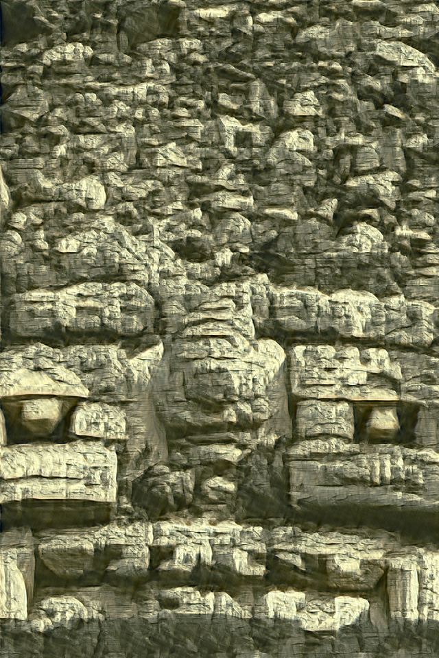

reconstruction loss stop condition
cows - original image
33039 - original training
33039 - early stop

cows - original training
cows - early stop
colusseum - original training
colusseum - early stop